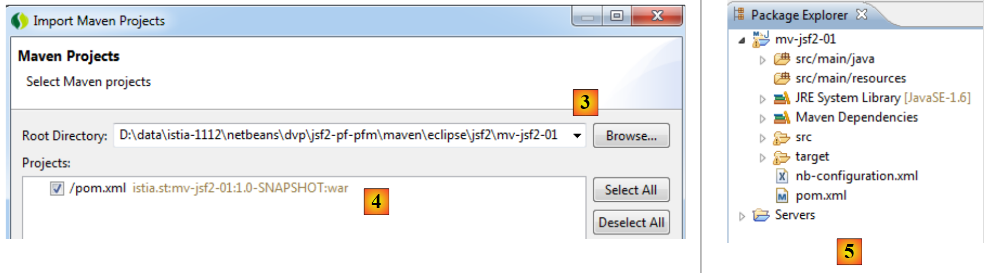
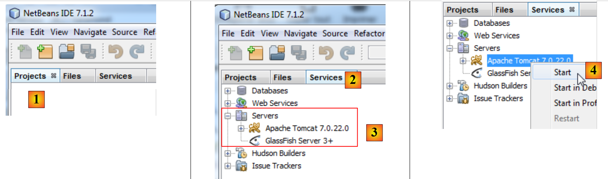
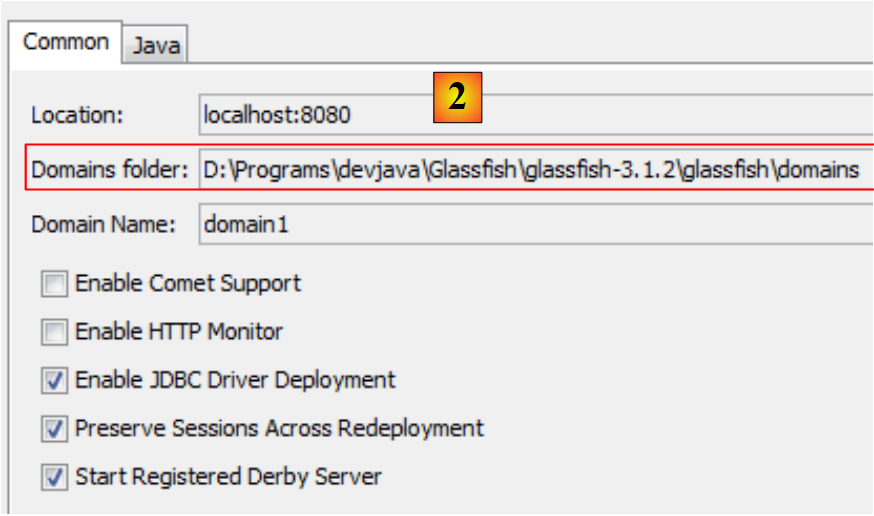
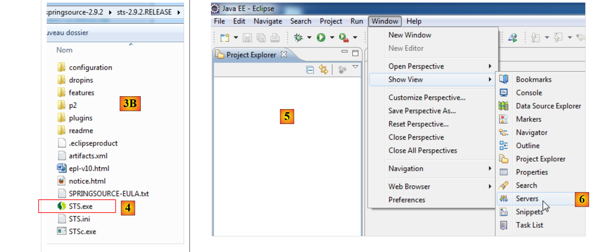
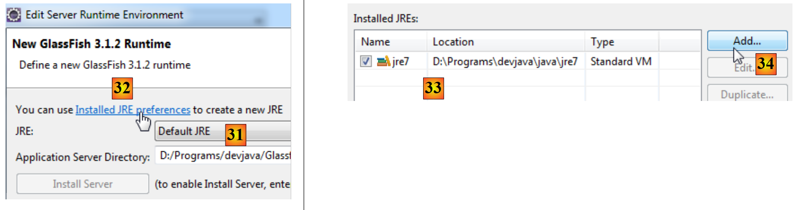

1. 简介
1.1. 概述
该文件的PDF版本可<在此处>下载。
本文档中的示例可<在此处>查看。
在此，我们将通过示例
- 介绍适用于桌面和移动应用的
- 以及适用于桌面和移动应用的 PrimeFaces 组件库。
本文档主要面向对 PrimeFaces 组件库 [http://www.primefaces.org] 感兴趣的学生和开发人员。该框架提供了数十个支持 AJAX 的组件 [http://www.primefaces.org/showcase/ui/home.jsf]，使您能够构建外观和操作体验类似于桌面应用程序的 Web 应用程序。 PrimeFaces 基于 JSF2 构建，因此有必要首先介绍该框架。PrimeFaces 还为移动设备提供了专用组件，我们也将对此进行讲解。
为说明这一观点，我们将分别在不同环境中构建一个预约排程应用程序：
- 基于 GlassFish 3.1 服务器，采用 JSF2 / EJB3 / JPA 技术的经典 Web 应用程序，
- 基于 PrimeFaces 技术、支持 AJAX 的同款应用程序，
- 最后，使用 PrimeFaces Mobile 技术构建的移动版本。
每次构建一个版本后，我们将将其部署到 Tomcat 7 服务器上的 JSF2 / Spring / JPA 环境中。因此，我们将构建六个 Java EE 应用程序。
本文仅涵盖构建这些应用程序所需的必要内容。因此，请不要指望它面面俱到——您在这里找不到那样的内容。它也不是最佳实践的汇编。经验丰富的开发人员可能会发现，他们本可以采取不同的做法。我只是希望，本文也不会成为不良实践的汇编。
若需进一步了解 JSF2 和 PrimeFaces，可参考以下链接： :
- [ref1]: Java EE5 教程 [http://java.sun.com/javaee/5/docs/tutorial/doc/index.HTML]，这是 Sun 提供的学习 Java EE5 的参考资料。请阅读第二部分 [Web 层] 以了解 Web 技术，特别是 JSF。教程示例可供下载，它们以 NetBeans 项目的形式提供，可以直接加载并运行，
- [ref2]: David Geary 和 Cay S. Horstmann 合著的《Core JavaServer Faces》第三版，McGraw-Hill 出版，
- [ref3]: PrimeFaces 文档 [http://primefaces.googlecode.com/files/primefaces_users_guide_3_2.pdf]，
- [ref4]: PrimeFaces Mobile 文档：[http://primefaces.googlecode.com/files/primefaces_mobile_users_guide_0_9_2.pdf]。
我们偶尔会引用[ref2]，以提示读者可通过该书更深入地探讨相关主题。
本文件旨在让尽可能广泛的读者群体能够理解。理解本文件所需的先决条件如下：
- 具备Java语言知识，
- 具备Java EE开发的基础知识。
满足这些先决条件所需的所有资源均可从网站 [https://developpez.com] 获取。其中部分资源也可在网站 [https://stahe.github.io] 上找到：
- [ref5]：《Java Web 编程入门》（2002年9月）：涵盖了 Java Web 编程的基础知识：Servlet 和 JSP 页面，
- [ref6]：《Java MVC Web开发基础》（2006年5月）[]：建议采用三层架构开发Web应用程序，其中Web层实现MVC（模型、视图、控制器）设计模式。
- [ref7]: 《Java EE 5 入门》（2012年1月）。
- [ref8]: 《Java 持久化实践》（2007年6月）。本文档介绍了如何使用 JPA（Java 持久化 API）进行数据持久化。
- [ref9]：使用 NetBeans 和 GlassFish 服务器构建 Java EE Web 服务（2009 年 1 月）。本文探讨了构建 Web 服务的过程。本文讨论的示例应用程序取自 [ref9]。
1.2. 示例
本文中介绍的示例已作为兼容 NetBeans 和 Eclipse 的 Maven 项目发布；您可以在<此处>下载它们
：
 |
要将项目导入 NetBeans：
 |
- 在 [1] 中，打开一个项目，
- 在 [2] 中，在文件系统中选择要打开的项目，
- 在 [3] 中，项目即被打开。
使用 Eclipse，
 |
- 在 [1] 中，导入一个项目，
- 在 [2] 中，该项目是一个现有的 Maven 项目，
 |
 |
- 在 [3] 中：您在文件系统中选择它，
- 在 [4] 中：Eclipse 将其识别为 Maven 项目，
- 在 [5] 中，即导入后的项目。
1.3. 使用的工具
接下来，我们将使用（截至 2012 年 5 月）：
- NetBeans 7.1.2 集成开发环境（IDE），可从 [http://www.netbeans.org] 获取，
- Eclipse Indigo IDE [http://www.eclipse.org/]，其定制版为 SpringSource Tool Suite (STS) [http://www.springsource.com/developer/sts]，
- PrimeFaces 3.2 版，可从 [http://primefaces.org/] 下载，
- PrimeFaces Mobile 0.9.2 版，可从 [http://primefaces.org/] 获取，
- 用于 MySQL 数据库的 WampServer [http://www.wampserver.com/]。
1.3.1. 安装 NetBeans IDE
本文将介绍 NetBeans 7.1.2 的安装，下载地址为 [http://netbeans.org/downloads/]。
 |
您可以选择同时包含 GlassFish 3.1.2 和 Apache Tomcat 7.0.22 的 Java EE 版本。前者支持使用 EJB3（企业级 JavaBeans）开发 Java EE 应用程序，而后者则支持不使用 EJB 开发 Java EE 应用程序。随后，我们将用 Spring 框架 [http://www.springsource.com/] 替代 EJB。
下载 NetBeans 安装程序后，请运行它。为此，您必须安装 JDK（Java 开发工具包）[http://www.oracle.com/technetwork/java/javase/overview/index.HTML]。除了 NetBeans 7.1.2 之外，还需安装：
- 用于单元测试的 JUnit 框架，
- 用于单元测试的 JUnit 框架，
- 用于单元测试的 JUnit 框架，Tomcat 7.0.22 服务器。
安装完成后，启动 NetBeans：
 |
- 在 [1] 中，NetBeans 7.1.2 显示三个标签页：
- [项目] 标签页显示已打开的 NetBeans 项目；
- [文件] 选项卡显示构成当前打开的 NetBeans 项目的各种文件；
- [服务] 选项卡汇总了 NetBeans 项目所使用的若干工具，
- 在 [2] 中，选择 [服务] 选项卡，并在 [3] 中选择 [服务器] 部分；
- 在 [4] 中，启动 Tomcat 服务器以验证其是否安装正确，
 |
- 在 [6] 中，于 [Apache Tomcat] 选项卡 [5] 中，可验证服务器是否已正确启动，
- 在 [7] 中，停止 Tomcat 服务器，
按照相同的步骤验证 GlassFish 3.1.2 服务器是否已正确安装：
 |
- 在 [8] 中，启动 GlassFish 服务器，
- 在 [9] 中，验证其是否已正确启动，
 |
- 在 [10] 中，将其停止。
现在我们已经拥有了一个功能齐全的集成开发环境（IDE）。我们可以开始构建项目了。在处理这些项目的过程中，我们将逐步探索该IDE的各项功能。
接下来，我们将安装 Eclipse IDE，并在其中注册刚刚下载的两台服务器——Tomcat 7 和 GlassFish 3.1.2。为此，我们需要知道这两台服务器的安装目录。这些信息可以在这两台服务器的属性中找到：
 |
- 在 [1] 中，Tomcat 7 的安装文件夹为，
 |
- 在 [2] 中，GlassFish 服务器的域文件夹。在 Eclipse 中注册 GlassFish 时，您只需提供以下信息 [D:\Programs\devjava\Glassfish\glassfish-3.1.2\glassfish]。
1.3.2. 安装 Eclipse IDE
尽管本文档中使用的 IDE 并非 Eclipse，但我们仍将介绍其安装方法。这是因为文档中的示例也以 Eclipse 的 Maven 项目形式提供。Eclipse 默认未预装 Maven。 为此，您必须安装一个插件。与其安装一个基础版的 Eclipse，我们 将安装 SpringSource Tool Suite [http://www.springsource.com/developer/sts]，这是一个预装了大量与 Spring 框架相关插件以及预配置好 Maven 的 Eclipse 版本。
 |
- 请访问 SpringSource Tool Suite (STS) 网站 [1] 下载 STS 的最新版本 [2A] [2B]。
 |
 |
- 下载的文件是一个安装程序，它会创建文件目录结构 [3A] [3B]。在 [4] 中，我们启动可执行文件，
- 在[5]中，关闭欢迎窗口后显示的IDE工作区。在[6]中，显示应用服务器窗口，
 |
- 在[7]中，显示服务器窗口。已注册一台服务器，这是一台VMware服务器，我们不会使用它。在[8]中，我们调用添加新服务器的向导，
 |
- 在[9A]处，系统提供了多种服务器选项。我们选择安装Apache Tomcat 7服务器[9B]，
 |
- 在 [10] 中，我们指定了随 NetBeans 安装的 Tomcat 7 服务器的安装目录。如果您没有 Tomcat 服务器，请使用 [11] 按钮，
- 在 [12] 中，Tomcat 服务器将出现在 [Servers] 窗口中，
 |
- 在 [13] 中，我们启动服务器，
- 在 [14] 中，服务器正在运行，
- 在 [15] 中，我们停止它。
如果一切正常，在 [Console] 窗口中，您应该看到以下 Tomcat 日志：
 |
- 仍在 [Servers] 窗口中，添加一个新服务器 [16]，
- 在[17]处，Glassfish服务器未列出，
- 此时，请使用链接 [18]，
 |
- 在 [19] 中，选择为 GlassFish 服务器添加适配器，
- 下载完成后，返回 [Servers] 窗口，添加新服务器，
- 此时在[21]中，GlassFish服务器已被列出，
 |
- 在 [22] 中，选择随 NetBeans 一起下载的 GlassFish 3.1.2 服务器，
- 在 [23] 中，指定 GlassFish 3.1.2 的安装文件夹（请注意 [24] 中显示的路径），
- 如果您没有 GlassFish 服务器，请使用 [25] 按钮，
 |
- 在 [26] 中，向导会要求输入 GlassFish 服务器管理员密码。首次安装时，该密码通常为 adminadmin，
- 向导完成后，GlassFish 服务器将出现在 [服务器] 窗口 [27] 中，
 |
- 在 [28] 中，启动它，
- 在 [29] 中，可能会出现问题。这取决于安装过程中提供的信息。GlassFish 需要 JDK（Java 开发工具包），而非 JRE（Java 运行时环境），
- 要访问 GlassFish 服务器属性，请在 [Servers] 窗口中双击它，
- 这将打开 [20] 窗口；在那里，点击 [运行时环境] 链接，
 |
- 在 [31] 中，我们将用 JDK 替换默认的 JRE。要执行此操作，请使用 [32] 链接，
- 在 [33] 中，列出了机器上已安装的 JRE，
- 在 [34] 中，添加另一个，
 |
- 在 [35] 中，选择 [标准虚拟机] (Virtual Machine)，
- 在 [36] 中，选择一个 JDK（>=1.6），
- 在 [37] 中，为新的 JRE 输入一个名称，
 |
- 返回 GlassFish 的 JRE 选择界面，选择 [38] 中指定的新 JRE，
- 配置向导完成后，重启 [GlassFish] [39]，
- 在 [40] 中，它将启动，
 |
- 在 [41] 中，显示服务器目录树，
- 在 [42] 中，我们访问 GlassFish 日志：
 |
- 在[43]中，我们停止了Glassfish服务器。
1.3.3. [ WampServer] 的安装
[WampServer] 是一套用于在 Windows 系统上进行 PHP/MySQL/Apache 开发的软件套件。我们将仅将其用于 MySQL 数据库管理系统。
 |
- 在 [WampServer] 网站 [1] 上，选择合适的版本 [2]，
- 下载的可执行文件是一个安装程序。安装过程中会要求提供各种信息。这些信息与 MySQL 无关，因此可以忽略。安装结束时会出现窗口 [3]。启动 [WampServer]，
 |
- 在 [4] 中，[WampServer] 图标会出现在屏幕右下角的任务栏中 [4]，
- 点击它后，会出现 [5] 菜单。该菜单允许您管理 Apache 服务器和 MySQL 数据库管理系统。要管理后者，请使用 [PhpMyAdmin] 选项，
- 这将打开如下所示的窗口，

本文将简要介绍 [PhpMyAdmin] 的使用方法。我们将仅演示如何使用它为本教程中的示例应用程序创建数据库。